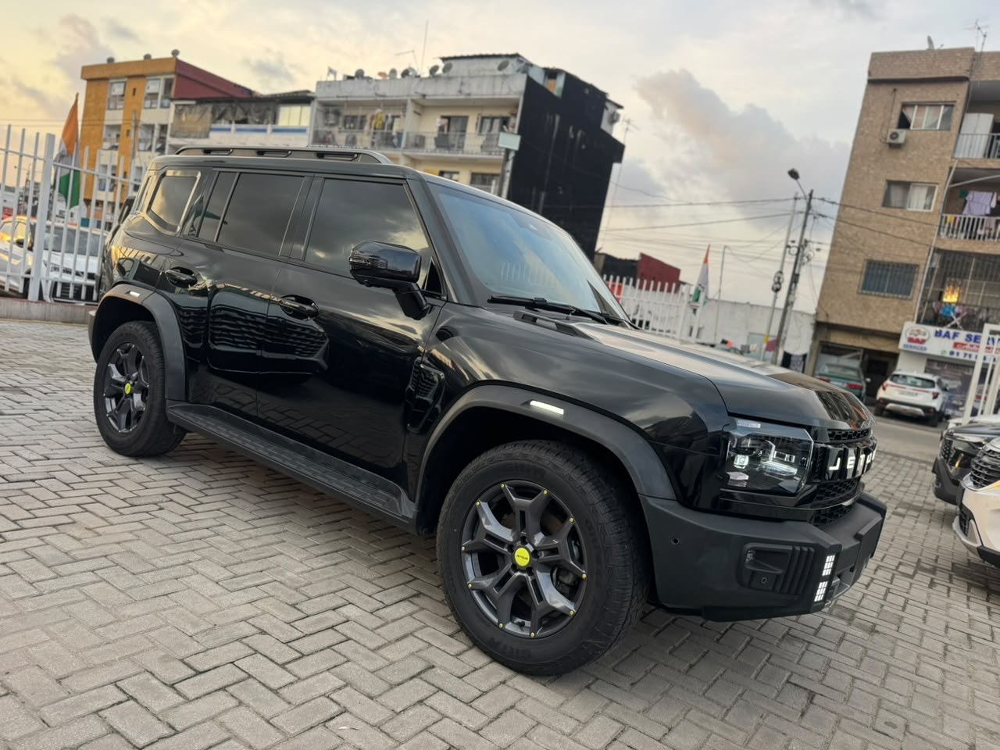

À vendre
Jetour T2 Conquest Pro noir
Essence 2,0 L · 4 cylindres · 4×4 · 1 333 km au compteur
28 000 000 FCFA TTC
FinitionConquest Pro
MotorisationEssence 2,0 L, 4 cylindres
Transmission4×4
Kilométrage1 333 km au compteur sur la photo
ToitPanoramique
Caméra360°
RechargeÀ induction